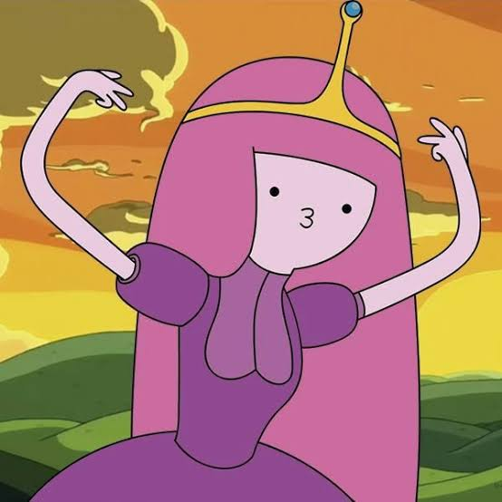

Vật lý
Mình thích đặt câu hỏi, tìm hiểu quy luật và khám phá cách mọi thứ hoạt động.
welcome to my little world
Một góc nhỏ xinh xắn để cất giữ những điều mình yêu thích.
♡ a tiny corner of the internet ♡
hi, mình là Tô Nghi 🎀
Chào mừng bạn đến với chiếc nhật ký nhỏ của mình — nơi có những câu hỏi vật lý, những trang sách hay và những vòng trượt băng thật vui.
made of little things & lots of love

✦♡stay curious,
stay soft ♡
a little introduction...
Mình là Tô Nghi. Mình thích khám phá những điều khiến bản thân tò mò, từ cách thế giới vận hành cho đến những câu chuyện nằm giữa các trang sách.
Đây là góc nhỏ của mình để lưu lại sở thích, những kỷ niệm và các điều dễ thương trong cuộc sống. Cứ thong thả khám phá nhé!
things I love...
Mình thích đặt câu hỏi, tìm hiểu quy luật và khám phá cách mọi thứ hoạt động.
Mỗi cuốn sách mở ra một thế giới mới và cho mình thêm nhiều góc nhìn.
Một sở thích để vận động, tận hưởng âm nhạc và thử những điều mới.
tiny pieces of my world...
Thêm ảnh của bạn để biến góc này thành một cuốn scrapbook riêng. Ảnh được xem ngay trên trình duyệt hiện tại.
Lưu ý: ảnh tải lên chỉ hiển thị ở trình duyệt này; muốn đăng ảnh công khai cho mọi người xem, hãy thêm ảnh vào repo và cập nhật website.
♡ LET'S BE FRIENDS ♡
Một lời chào nhỏ luôn được chào đón 💌